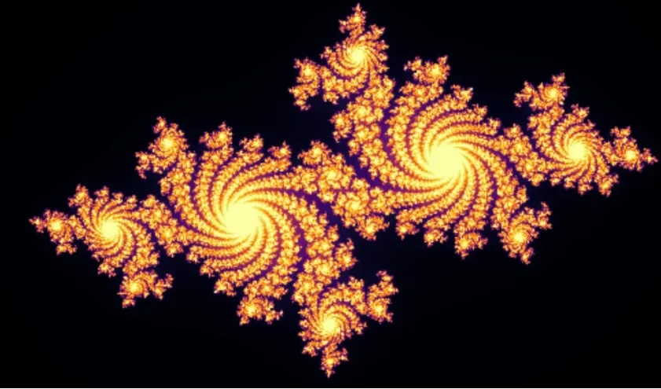

February 20, 2025
(This article originally appeared on Medium.)
Exploring Julia Sets with Python
Generating Complex Beauty Through Simple Code
In the 1990s, I was a young Gen Xer. Pearl Jam filled the air with "Jeremy." The X-Files convinced us the truth was out there. Fractals were everywhere you looked. You saw them on posters, TV, screensavers, and in the latest Star Trek movie.
They are beautiful, but what are fractals? They are shapes that show self-similarity at various scales. This means their patterns repeat in smaller versions infinitely. As a result, they form complex and intricate structures. For a great starting point on fractals, try "Fractals: A Very Short Introduction."
Mandelbrot Set
In a Julia set, we look at the function z → z² + C with a fixed C. We iterate over the set of z values to determine which diverge and which do not.
In contrast, the Mandelbrot set starts with z₀ = 0 set to 0. We use the x and y axes for the real and imaginary parts of z. We then check whether the sequence stays bounded or escapes to infinity. Points that stay bounded are colored black, while those that diverge are colored based on how quickly they escape.
Python Code
It's not too difficult to write Python code for this process. Here's an example.
import numpy as np
import matplotlib.pyplot as plt
def create_mandelbrot_set(width=800, height=800, max_iterations=256):
"""
Function to compute the Mandelbrot set.
Params
------
width: width of the image
height: height of the image
max_iterations: max number of iterations to check for divergence
Returns
-------
2D array representing the Mandelbrot set
"""
# Define the complex plane
x_axis = np.linspace(-2, 2, width)
y_axis = np.linspace(-2, 2, height)
x, y = np.meshgrid(x_axis, y_axis)
C = x + 1j * y
# Initialize arrays.
z = np.zeros(C.shape, dtype=complex)
mandelbrot_set = np.zeros(C.shape, dtype=int)
# Determine the iteration count for points in the plane.
for i in range(max_iterations):
# Remove points that have already diverged.
mask = np.abs(z) < 2
# Apply the Mandelbrot Set formula.
z[mask] = z[mask] ** 2 + C[mask]
# Increment the iteration count for points still in the set.
mandelbrot_set[mask] += 1
return mandelbrot_set
def plot_mandelbrot_set(mandelbrot_set, figsize=(6, 6)):
"""
Function to plot the Mandelbrot set.
Params
------
mandelbrot_set: 2D array of iteration counts
figsize: figure size for the plot
"""
plt.figure(figsize=figsize)
plt.title('Mandelbrot Set')
plt.xlabel("Real(C)")
plt.ylabel("Imaginary(C)")
plt.imshow(mandelbrot_set, cmap='twilight_shifted')
plt.show()
if __name__ == "__main__":
# Generate the Mandelbrot Set.
mandelbrot = create_mandelbrot_set()
# Plot the Mandelbrot Set.
plot_mandelbrot_set(mandelbrot)
The function create_mandelbrot_set(…) starts by defining a complex plane. The x-axis (real axis) and y-axis (imaginary axis) both range from -2 to 2. The program initializes an array to track iteration counts. This shows how many times we have iterated a function without going to infinity. At each iteration, we drop points that exceed a threshold of 2, which we have chosen arbitrarily. Then we apply the formula and update the iteration counts. The plot_mandelbrot_set(…) function uses simple Matplotlib code to display the image on the screen. Run the code to get the image at the top of this article.
Connections of Mandelbrot Sets to Julia Sets
The Mandelbrot set acts as an "atlas" of Julia sets. You can walk around the Mandelbrot set and generate the corresponding Julia set for the corresponding value of C.
For any point C inside the Mandelbrot set, the Julia set with that value of C is connected, and for any point outside the Mandelbrot set, the Julia set is disconnected. For a given C, if z₀ = 0 stays bounded, the corresponding Julia set is connected, and if z₀ = 0 is unbounded, the corresponding Julia set is totally disconnected. Note that this link between Mandelbrot and Julia sets only holds for z₀ = 0.
The Mandelbrot set uses the iteration rule z → z² + C. This formula is easily generalized to higher powers (say 3 or 4) for "Multibrot sets." In code, just update this line, using whatever power you're interested in.
z[mask] = z[mask] ** 3 + C[mask]
We can also vary the initial value of z₀ = 0. The resulting sets are no longer Mandelbrot sets, but they're still interesting. The code only needs to be tweaked slightly. Change the signature to
def create_mandelbrot_set(width=800, height=800, max_iterations=256, z0=0 + 0j):
...
z = np.full(C.shape, z0, dtype=complex)
...
and call with the desired value of z₀ = 0..
mandelbrot = create_mandelbrot_set(z0=0.5 + 0.5j)
Let's try this with z₀ = -1 + 0.3j. We get the following graph.
Conclusion
I hope you've enjoyed diving into the world of Mandelbrot sets. We covered Mandelbrot sets, made a simple program, looked at some connections between Julia sets and Mandelbrot sets, and explored some variations of Mandelbrot sets.
Try experimenting with the code and see what you can come up with. Have fun!